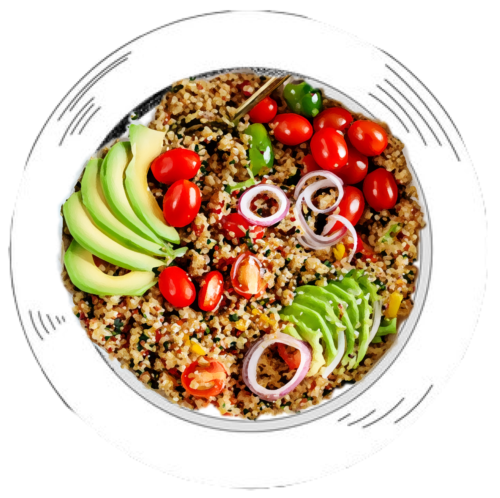

Ingredients
- 1 cup quinoa
- 2 cups water
- 1 medium cucumber, diced
- 1 cup cherry tomatoes, halved
- 2 ripe avocados, pitted and diced
- 1 red bell pepper, diced
- 1/4 cup fresh parsley, finely chopped
- 2 cups baby spinach leaves
- 1/4 cup olive oil
- Juice of 1 lemon (about 2 tablespoons)
- Salt, to taste
- Black pepper, to taste
- 1/2 cup roasted cashews

Preparation
- Rinse quinoa under cold water until water runs clear.
-
In a saucepan, combine quinoa with 2 cups of water. Bring to a boil,
reduce heat, cover, and simmer for 15-20 minutes until tender.
- Fluff cooked quinoa with a fork and allow it to cool.
-
In a large bowl, mix quinoa with diced cucumber, tomatoes, avocados,
and bell pepper.
- Add chopped parsley and spinach. Toss to combine.
-
In a small bowl, whisk olive oil and lemon juice with salt and pepper
to make the dressing.
- Drizzle dressing over the salad and mix well.
- Top with roasted cashews before serving.